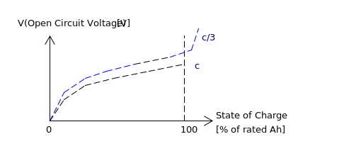
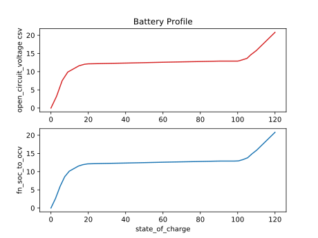
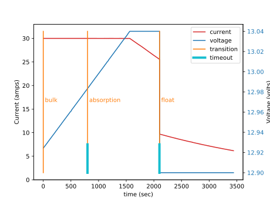
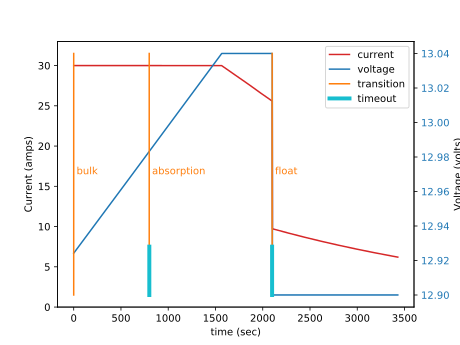

Software should be treated not as a static product, but as a living manifestation of the development team’s collective understanding.
—From How to Build Good Software, by Li Hongyi
Distributed Battery Charging#
This essay describes two engineers working together to build a distributed three stage battery charger. It follows them as they learn from one another and challenge each other’s work. As their progress evolves against their shared knowledge, they pack what they have learned and what they have done, into a very short document called the specification (spec).
They treat their specification as a time capsule they are sending into the future, as an artifact to help the engineers of tomorrow (who might just be older versions of themselves) make sense of their system.
Before we start with the story, here is a bit of background information that will help provide some context.
High Level Introduction to how Batteries and Chargers Work#
Lead acid batteries are very heavy. But they are cheaper than lithium ion batteries and this is why they are used in a lot of off-grid electrical systems.
A large lead-acid battery is made up of a set of smaller lead-acid batteries connected together in series. These smaller batteries are called cells.
Each cell contains two terminals, and each terminal is connected to a plate that reaches down into a bath of sulphuric acid (H2SO4) and water (H2O). There is a positive and a negative terminal. The positive terminal of a cell is made up of lead dioxide (PbO2) and the negative terminal is made out of lead (Pb).
A battery is a chemical reaction that wants to happen, but can’t until there is a path for electrons to flow from one material to another. As a result, there is a voltage potential expressed across the positive and negative terminals of the battery. If an electrical device is connected across these terminals an electron path is made, the battery can begin its chemical reaction. As a side effect the electrical device is powered on. The flow of current leaves the positive terminal and enters the negative terminal. When this happens the battery is said to discharge.

Charging of a battery occurs when current is forced to flow in the opposite direction: current leaves the negative terminal and enters the positive terminal. This causes the chemical reaction to reverse, sequestering the electrons back into the various materials of the battery. You can charge a battery with a battery charger.

Note
If you aren’t familiar with the terminology of electricity, imagine a water tower. The water is trying to get to the ground, due to gravity, but it is held in place by the walls of the tower. This means that there is a potential for the water to flow, the height of the tower determines how much energy is stored within it. The higher the tower, the higher the potential energy. Voltage is analogous to height of the held water in the tower.
Now imagine connecting a pipe from the tower to the ground, and letting the water flow through it. This flow is like current in an electrical system, and the pipe width would limit that flow, so that would be like an electrical load.
Our battery is like a water tower; if no pipe is connected, current can’t flow. If a pipe is connected, it can, and the energy of the battery reduces just like the potential energy of our water tower would reduce as its water leaves it through a pipe. If you were to push the current back into the pipe, by connecting a higher water tower, or by just driving the current back up the tube with a pump, you would cause the potential of the water tower to increase. We would be charging the tower.
As mentioned before, a battery is made up of stacking cells in series. Think of that as a very tall water tower made up of stacked shorter water towers. You can increase their potential energy by stacking them this way.
As a lead acid battery is discharged, a crust of lead sulphate (PbSO4) forms on the plates. This crust reduces the surface area of the lead plates exposed to the acid, reducing its ability to react and drive current.

There are electrical charging techniques which can remove this lead sulphate (PbSO4), by reversing the chemical reaction, and even sometimes bubbling the acid. These bubbles physically massage away the lead sulphate crystals, dislodging them from the plate, dropping them into the acid bath where they can break down, crystallizing their lead atoms back onto the plates.
An electrical charger can control one of two things, it can act to control current flow or it can control the voltage across the terminals of the battery. If it holds the current constant, electrons are pushed back into the battery, which will cause the voltage of the battery to slowly rise over time.
If the charger holds the voltage at a higher potential than the battery voltage, current will flow into the battery. At first it will flow quickly, but over time the battery’s ability to accept electrons will be limited by the amount of material within it, causing the current flow to subside.
Note
Thinking back to the water tower. If we re-filled our water tower using a pump to push a constant amount of water, this would be like controlling the current being pushed into the battery. If we connected a higher water tower, and let it passively drain some of its water into the lower tower, this would be like controlling the voltage of our charger. Together the two towers would have the potential energy of the taller tower, so its voltage would be set to this.
When you hear people talk about the stages of charging of a battery, they are talking about either a constant current or a constant voltage charging technique. In two stage charging, a constant current technique starts the charging process, then once the battery voltage rises to a high enough level, a constant voltage technique takes over. In three stage charging, the third stage is a constant voltage technique, but held at a lower value than the second stage. A forth stage of charging can be applied very infrequently, it’s called equalization. It is a constant voltage technique that applies such a high voltage across the battery terminals, that the acid boils, and explosive hydrogen is expelled from the batteries (this is why battery rooms need to be well vented).
There are arbitrary naming conventions that have been applied to these stages of charging:
Name of Stage |
Constant Current? |
Constant Voltage? |
Notes |
|---|---|---|---|
bulk stage |
yes |
no |
80 percent of charge put back |
absorption stage |
no |
yes |
|
float stage |
no |
yes |
voltage is lower than absorption |
equalization |
no |
yes |
voltage is very high |
A charger is typically called one of these:
Name of Charger |
Meaning |
|---|---|
trickle charger |
float stage only |
two stage charger |
bulk followed by the float stage |
three stage charger |
bulk followed by absorption, followed by float |
The equalization stage is so dangerous that it doesn’t happen automatically, it has to be manually set by the user.
It has been found that when you charge batteries with three stage chargers, the process of plate sulphation is slower than it would be with a two stage charger. If such a charger is also equipped with the equalization feature, a knowledgeable user can keep their battery’s healthy for a long time.
Let’s look at the three stage charging electrical profile:

That diagram is not going to win any graphic design awards, but it shows you everything you need to know about building a charger. We need two control systems, one that can hold current to a constant level and one that can hold the voltage to a constant level. We need to track time, so that we can exit a stage if the charger has been in it too long. And we need to be able to set some parameters based on the kind of battery we are attached too.
The bulk stage is where the battery is charged quickly. Charging the battery is what our customer’s care about the most, but battery maintenance is very important too.
The charger will have a rated current, the more money we put into its hardware, the higher this current can be. The problem is if we over-build this, our charger will be too big for a lot of systems and these customers will buy someone else’s product because it is cheaper than ours.
A way to solve this problem is to build a charger that can be ganged together with more versions of itself. That way we can keep the costs low, and if a customer needs a lot of current, they can buy as many of our products as they need and gang them together in parallel.
The added benefit of this approach is that if one of their chargers fails, there batteries can still be charged by the others in their system. It offers them some resilience. If they felt so inclined, they could actually over-build their charging system to increase their system’s reliability (think military contracts). Batteries are expensive, heavy and dangerous, and chargers are relatively cheap and easy to work with and install.
Another problem our customers have is with the parameters. We can’t expect them to figure out what all of the values and time-outs mean. They really don’t care, we need to eat this complexity on their behalf, especially if we are expecting them to buy a bunch of our products for a single installation.
Often the hardest thing to do on a project is to pack knowledge into a specification (spec). The specification should be simple and full of pictures, if it isn’t nobody will look a it, and nobody will change it to match what the system actually does. Engineers talk with pictures, because pictures transmit more information than writing. Pictures also illicit conversation which moves relevant personal knowledge into project knowledge: When you are talking to technical people they often forget that they know a lot of things you don’t know. If you are both pointing to and talking about a picture, you will both learn more about each others contribution and thinking in regards to the project. Once things are discovered from one another they should be packed into a couple of notes and pictures and added to the spec.
The spec should be short enough that it can be read and understood by everyone involved. If specific drawings are too technical for some members, efforts should be made to explain what they mean so everyone can participate in the conversation. Here is an example of such a conversation to discover how to build a single three stage battery charger.
Note
New knowledge and things said by other imagined people will be highlighted.
Spec 1: Control Systems#
Specification (1)
A charger has two control systems: constant current and constant voltage.
The bulk stage is a constant current control technique.
The absorption, float and equalization stages are constant voltage control techniques.
I show the above diagram to the electrical engineer I’m working with, and he says, Yeah, it looks good, but can you make sure the two control systems are generalizeable?
“What do you mean?”
Well, I want to just give the current control system a reference current and it will drive the device to output that current. The same idea applies to the voltage controller.
He continues, A control system is just some math, you give it a goal called a “reference”. then you give it the value of the thing it is trying to control, call this the “input” and the math will drive the “output” towards the goal. We connect this output value to our hardware and it will behave as expected. I want to use the same math to solve the current and voltage control problems, so give me a reference and give me the input and I’ll make it work.
You turn to leave and he says, Oh, one more thing, I need to tune the two control systems differently, so make sure I can set some variables “ki”, “kp” and “kd”. That should be good.
So now we have to start thinking about all of the parameters, each can be changed for a different battery type. We change the language on the diagram to match how our electrical engineer speaks.

After we update the image we show our electrical engineer the new picture.
He looks at it and asks, What are these arrows connecting the boxes together?
You answer, “It’s just a way of saying that the reference,
input, kp, ki and kd values will be in both of the current and
voltage control classes. Think of it as a drawing short hand.”
He says, Ok, it looks good.
Spec 2: Battery Parameters#
Specification (2)
A charger has two control systems: constant current and constant voltage.
The bulk stage is a constant current control technique.
The absorption, float and equalization stages are constant voltage control techniques.
The electrical profile of the system will look like this:
The behavior of the system will look like this:
But we still haven’t solved the parameter issue. To create a data structure that has the control system information and the battery stuff in one place we adjust our data model to look like this:

The ChargerParameter class “has a” (black diamond arrow)
CurrentControlSystem, a VoltageControlSystem and some
BatterySpecificInformation.
Now that we have a plan for structuring our data, we need to go back to our behavioral diagram and figure out how to get information from the world.
We track down our electrical engineer and ask him, “How fast to I need to read the voltage and the current?”
He says, Well, I have to read these values very quickly in the embedded device’s interrupt service routines, the control systems will be running at 20 Khz, but you don’t have to worry about that. Changing between the various stages can happen slowly. I’ll be reading the input, I’ll use raw ADC readings to keep my code fast and I’ll use the PWM peripherals on the part to set the output current and voltage via an H-bridge. But I will need you to determine which control system to run and I’ll need you to set its reference. Make it so I can tune these values later if I need to, but for now you can sample the current, voltage and make decisions at 2 Hz”. (every 0.5 seconds)
You say, “Wait, I’m not controlling the current or voltage?”.
He laughs and says, Not with Python you aren’t, but you control which control system will run, and you will control that controllers reference and tuning parameters, think meta, man!
Here we are seeing some of the power of statecharts. They allow us to wrap deep expertise inside of a system with a rich set of other features. The electrical engineer will manage the control system and the circuits needed to make the device work, but that is where his expertise stops. We need to manage which of the control strategies are applied, and what their goals are.
Let’s pack this new knowledge into our pictures. Let’s start with the data model. We want to attach it to our statechart so that our statechart can use it:

We show our design to the electrical engineer and he says, What are those diamond arrows?
You answer, “It’s just a way of saying one class has an
attribute of another class. For instance the battery_spec in the
ChargerParameter class “has a” BatterySpecificInformation class. You leave
the BatterySpecificInformation class on the picture so you can see what its
attribute names are.”
It seems kind of complicated, can you just show me in code?
class ControlSystem:
def __init__(self):
self.reference = 0
# ..
class CurrentControlSystem(ControlSystem):
def __init__(self):
super().__init__(self)
class VoltageControlSystem(ControlSystem):
def __init__(self):
super().__init__(self)
class BatterySpecificSettings:
def __init__(self):
self.bulk_timeout_sec = 700
# ..
class ChargerParameters:
def __init__(self):
self.controller = None
self.c_control = CurrentControlSystem()
self.v_control = VoltageControlSystem()
self.battery_spec = BatterySpecificSettings()
class Charger(ChargerParameters, CustomFactory):
def __init__(self):
# ..
if __name__ = '__main__':
charger = Charger()
charge.c_control.reference = 40.0
charge.battery_spec.bulk_timeout_sec = 600
# ..
He looks at the picture and the code for a while, then says, OK, I see how it works, but why are the diamond arrows backwards?
You answer, “The head of the diamond describes who owns the other thing. If you want to know why it was set that way you will have to ask the committee that decided this in the 1990’s”
Then he asks, What’s the ball and the stick?
“That’s where the data will connect to the software that drives the charger’s
behavior. The behavior will need the data, and if you see the Charger class
inherits from the CustomFactory class which contains all of the code that
can drive behavior. Inheritance is just programming by difference, that arrow
is like a copy and paste, it’s as if I have copied and pasted all of that
CustomFactory and ChargerParameters code into the Charger class.
The ball is just short hand for saying the data attaches to the behavior “here”.
The “here” in this case is the “charging state” which will be described
somewhere else.”
He looks confused, and says, I guess you will have to show me when you make it.
The data model seems good enough so let’s start designing the system behavior. We need to start programming time, so we will construct three heart beats, something that will sample the current, something that will sample the voltage and something that will drive the statechart’s decisions. To make current and voltage readings, we create two hooks in the charging state. Finally, we make sure that these heart beats are turned off when we leave the state; we can’t remember why this is important, but we know it is.
We also adjust the chart so that the correct control system is selected when we enter a charging stage, and then we use our data model and our behavior to select which current or voltage reference will be set in each stage.
Now we want to talk to our electrical engineer about behavior, but we know we should accompany the statechart diagram with the electrical profile, or it might be a bit much for him.

We show him the diagram, and say, “Listen, some stuff is missing on this, but I just want you to look at how the current and voltage are sampled, and how the control systems are set up.”
He says, Ok, show me.
You say, “In the entry stage we create three different named pulses that repeat forever, or until the charging state is exited. The chart can react to these named pulses and change state, or just run some code.”
I pause and look at him, he says, Keep going.
“Alright, see that Sample_Current pulse, it will fire forever with a period of
cur_in_sec which we will probably just set to 0.5 seconds, but we can tune
it, we can make this something else if we need to.”
“The Sample_Current and Sample_Voltage events will be sent at the chart
and the chart will react to them, but in our case, we just hook these signals
to sample the current and voltage. The chart won’t actually change state when
these events are seen by it, it will just use the events to update a curr
and volt attribute in its data structure so these values can be kept fresh
enough that the chart can make good decisions with the information.”
“Does that make sense?”
Yeah, it’s just a timer right?
You answer, “Yeah, but look there is another one, called Pulse, it’s not
wired up yet, but soon it will be the thing that drives the chart’s decisions”
“Now I’ll show you how the controllers are set up. After the charging state is
entered, it will set up these pulses, then it will enter the bulk state. When
it enters the constant_current_state, it sets the control system to use the
CurrentControlSystem and then when it enters the bulk state, it sets the
reference of this control system to be battery_spec.ref_amps from our data
model.”
He looks at it for a while, and says, Yeah, this is what I wanted, ok, yeah, I get it. How do I get into the other states?
“I haven’t set that up yet, but suppose we were to enter the absorption
state, we would first have to enter the constant_voltage_state. This would
cause our control system to change, we would detach the current control system,
and attach the voltage control system. We would then use all of that control
system’s kp, ki and kd parameters.”
Yeah, ok, good, this is what I wanted.
Things seem to be coming together, so we go back and work on our spec, teasing apart our high level descriptions from our technical design.
Spec 3: Electrical Charging Profile#
High level Specification (3)
This product will be a three stage charger with an equalization feature.
The charger has two control systems: constant current and constant voltage.
The bulk stage is a constant current control technique.
The absorption, float and equalization stages are constant voltage control techniques.
The charging electrical profile can be seen here:
Sofware Functional Specification (3)
The software system will be broken into two parts, fast running c code and slower running Python code
The c code will run in ISRs at a frequency of 20 Khz and will control the charger in either a constant current or constant voltage mode. (see separate doc)
The Python code will determine which control strategy the c code is using, it will also set the c code’s control system parameters. The Python code will not directly control the electrical output of the unit
The Python code will sample the current and voltage and make decisions every 0.5 seconds
The Python data architecture can be seen here:
The Python behavioral architecture can be seen here.
Let’s wire up the Pulse event and add more functionality to our chart. We
want the charger to:
change its charging state to match our electrical/time profile
be able to be forced into any of the charge states
Here is a new design that does these things:

Since there is a need for timeouts in various states, we invent a new signal
called Tick. Tick is driven by our Pulse event, and it is given a
payload which is the time in seconds since the charging state was entered.
Time to show our electrical engineer.
We approach him with the diagrams and he says, Ok walk me through it.
“When the charging state is entered the sec is set to 0, then the
three heart beats are initiated. Two of the heart beats drive the current and
voltage readings, but the third heart beat, Pulse, will fire every
pulse_sec seconds. We will probably set pulse_sec to 0.5. The key
thing to notice on this picture is that Pulse drives another event called
Tick which is given a payload of sec which is how much time has passed
since the charging state was entered.”
Wait, how does this tick thing work?.
“When system turns on the
first thing that will happen is it will enter the charging state. When the
charging state is entered a bunch of heart beats are setup, these are
basically named timers, Sample_Current, Sample_Voltage and Pulse.
Then the charging state initializes, causing a transition into the bulk
state. While this happens, the constant_current_state is entered, setting
the control system to use your current control system, then it enters the
bulk state, which sets the reference of your current control system.”
He looks at the diagram and after some time says, Ok, yeah, I see that, but how does this pulse stuff work?
“The Pulse event will fire every, say 0.5 seconds, but it is caught by a hook,
which invents another signal called Tick which has a payload, sec. The
sec payload of the Tick signal will have the time in seconds since the
charging state was entered. It’s this Tick event, which can make stuff
happen. Do you see it?”
I see it. So how do these charging stage time outs work? Can you show me the electrical profile and the statechart timing mechanisms together?

“Ok, so first of all we enter the bulk state, then we start getting Tick
events with sec payloads representing the amount of time in seconds since
the beginning of charging. Notice that when the bulk state is entered,
the time at which this happened is squirreled away in the start_sec
attribute. From then on, every pulse_sec a Tick signal will be seen by
the bulk state. Your current control system will charge the battery. While this
is happening the bulk state will see a whole lot of Tick events which it
will ignore. But once the time in bulk is equal to or greater than
abs_timeout_sec or if the battery voltage is equal to or greater than
bulk_exit_volt, the bulk state will post a To_Abs event to the chart.”
“The To_Abs event, will cause an exit from the bulk state, then an exit
from the constant_current_control state. Then it will enter into the
constant_voltage_control state, which will switch the control system to use
a voltage controller, then enter the absorption state which will set the
voltage reference to abs_ref_volts”.
I see how it works and I see how the same thing happens for transitions to float from absorption. Also, I see that you can only force your way into the equalize state, that’s good.
He looks a bit longer and says, So the charger will try and spend most of its time in float? But how to we get back into bulk if there is a big draw on the batteries? Say our customer has a big DC load that draws the voltage down below the bulk_entry_volts. What happens then?
You look at the chart and see that you can’t get back into bulk, “Right now you can’t, I missed that, but let me fix it” You spend a moment adjusting the chart, “Look at this:”

“See how I adjusted the Sample_Voltage hook to post a To_Bulk signal when
the voltage is below the bulk_entry_volts. I have added a To_Bulk hook
in the bulk state which blocks this event from causing a transition from
charging to bulk while the unit is in bulk but the voltage is still
lower than the bulk_exit_volts.”
He asks, Why would that happen?.
“The charger would probably need some time to get the voltage above the
bulk_entry_volts once it fell below this threshold, maybe because of a big
DC draw on the battery.”
He says, Yeah, that will probably happen in some situations.
You ask him, “Do we need to separate the timing of our current, voltage and decision pulses?”
He says, No, it’s not that important, what’s the cost of having extra timers anyway?
“It’s not a big deal, just each heart beat will have its own thread, and when I’m looking at the logs it could get kind of cluttered having all of those signals firing at the same time. So, maybe I could simplify the design by just having one heart beat.”
Yeah, simple is good, we probably won’t need separate timers.
You spend a moment adjusting the chart. “Here, it’s less cluttered now”:

Do you see anything else we could pull out of there?
No, it seems pretty compact, how are you going to test this thing anyway? I’m not going to have hardware for you for a couple of weeks, can you test it before that?.
“I will run it on a PC and feed it fake electrical profiles, I also plan to squeeze time so I can run it through all of its states quickly”.
Things seem to be coming together, so we go back and work on our spec, teasing apart our high level descriptions from our technical design.
Spec 4: Charger Behavioral Design#
High level Specification (4)
This product will be a three stage charger with an equalization feature.
The charger has two control systems: constant current and constant voltage.
The bulk stage is a constant current control technique.
The absorption, float and equalization stages are constant voltage control techniques.
The charging electrical profile can be seen here:
Sofware Functional Specification (4)
The software system will be broken into two parts, fast running c code and slower running Python code.
The c code will run in ISRs at a frequency of 20 Khz and will control the charger in either a constant current or constant voltage mode. (see separate doc)
The Python code will determine which control strategy the c code is using, it will also set the c code’s control system parameters. The Python code will not directly control the electrical output of the unit.
The Python code will sample the current and voltage and make decisions every 0.5 seconds.
The Python data architecture can be seen here:

The Python behavioral architecture can be seen here:

We have enough knowledge now to build something. Let’s start with the data model:
The code to make this model can be found here
It would be simple enough to adjust our code to use a SQL database, or an object-relational-mapper, like SQLAlchemy to track the different types of battery specifications. For now we will leave our model as Python code, but if you had a lot of different battery types, you might want to keep them in a database.
Next, let’s write the statechart:
class Charger(ChargerParameters, LoggedBehavior, ThreadSafeAttributes):
# The charger will be multithreaded, provide simple locks around data
# accesses to these attributes
_attributes = [
'amps',
'volts',
'sec',
'control',
]
def __init__(self, name=None, charger_params=None, live_trace=None,
live_spy=None, pulse_sec=None):
'''Three stage battery charger feature management
This class will manage the data and the behavior of our three stage
battery charger. The control systems used by the charge will be
written in c, but the reference and turning parameters of these
controllers will be accessible to this python code via SWIG.
To understand this class reference:
1) the three stage charging electrical profile drawing:
2) the three stage charging data architecture drawing:
3) the three stage charging state chart drawing:
**Args**:
| ``name`` (str): name of the charging state chart
| ``charger_params=None`` (ChargerParameters):
| parameters/controller
| needed by charger
| ``live_trace=None(bool)``: enable live_trace feature?
| ``live_spy=None(bool)``: enable live_spy feature?
| ``pulse_sec=None``(float): how often to same current/voltage
| and make decisions about
| state changes
**Example(s)**:
.. code-block:: python
ccs = CurrentControlSystem(# ...)
vcs = VoltageControlSystem(# ...)
battery_spec = BatterySpecificationSettings(# ...)
charge_params = ChargerParameters(
c_control=ccs,
v_control=vcs,
battery_spec=battery_spec)
three_stage_charger = Charger(
'charger',
charger_params=charger_params,
live_trace=True)
'''
self.pulse_sec = 0.5 if pulse_sec is None else pulse_sec
c_control = charger_params.c_control
v_control = charger_params.v_control
battery_spec = charger_params.battery_spec
super().__init__(
name=name,
live_trace=live_trace,
live_spy=live_spy,
c_control=c_control,
v_control=v_control,
battery_spec=battery_spec,
)
self.charging = self.create(state="charging"). \
catch(signal=signals.ENTRY_SIGNAL,
handler=self.charging_entry_signal). \
catch(signal=signals.INIT_SIGNAL,
handler=self.charging_init_signal). \
catch(signal=signals.Pulse,
handler=self.charging_pulse). \
catch(signal=signals.To_Bulk,
handler=self.charging_to_bulk). \
catch(signal=signals.Force_Bulk,
handler=self.charging_force_bulk). \
catch(signal=signals.To_Abs,
handler=self.charging_to_abs). \
catch(signal=signals.Force_Abs,
handler=self.charging_force_abs). \
catch(signal=signals.To_Float,
handler=self.charging_to_float). \
catch(signal=signals.Force_Float,
handler=self.charging_force_float). \
catch(signal=signals.Force_Equ,
handler=self.charging_force_equ). \
catch(signal=signals.EXIT_SIGNAL,
handler=self.charging_exit_signal). \
to_method()
self.constant_current_control = \
self.create(state="constant_current_control"). \
catch(signal=signals.ENTRY_SIGNAL,
handler=self.constant_current_control_entry_signal). \
to_method()
self.constant_voltage_control = \
self.create(state="constant_voltage_control"). \
catch(signal=signals.ENTRY,
handler=self.contant_voltage_control_entry). \
to_method()
self.bulk = self.create(state="bulk"). \
catch(signal=signals.ENTRY_SIGNAL,
handler=self.bulk_entry_signal). \
catch(signal=signals.To_Bulk,
handler=self.bulk_to_bulk). \
catch(signal=signals.Tick,
handler=self.bulk_tick). \
to_method()
self.absorption = self.create(state="absorption"). \
catch(signal=signals.ENTRY_SIGNAL,
handler=self.absorption_entry_signal). \
catch(signal=signals.Tick,
handler=self.absorption_tick). \
to_method()
self.float = self.create(state="float"). \
catch(signal=signals.ENTRY,
handler=self.float_entry). \
to_method()
self.equalize = self.create(state="equalize"). \
catch(signal=signals.ENTRY_SIGNAL,
handler=self.equalize_entry_signal). \
catch(signal=signals.Tick,
handler=self.equalize_tick). \
to_method()
self.nest(self.charging, parent=None). \
nest(self.constant_current_control, parent=self.charging). \
nest(self.constant_voltage_control, parent=self.charging). \
nest(self.bulk, parent=self.constant_current_control). \
nest(self.absorption, parent=self.constant_voltage_control). \
nest(self.float, parent=self.constant_voltage_control). \
nest(self.equalize, parent=self.constant_voltage_control)
self.start_at(self.charging)
def charging_entry_signal(self, e):
status = return_status.HANDLED
self.sec = 0
self.post_fifo(Event(signal=signals.Pulse),
deferred=True,
period=self.pulse_sec,
times=0)
return status
def charging_init_signal(self, e):
status = self.trans(self.constant_current_control)
return status
def charging_pulse(self, e):
status = return_status.HANDLED
self.amps = self.sample_current()
self.volts = self.sample_voltage()
if(self.volts < self.battery_spec.bulk_entry_volts):
self.post_fifo(Event(signal=signals.To_Bulk))
self.sec += self.pulse_sec
self.post_fifo(Event(signal=signals.Tick,
payload=SecInCharge(sec=self.sec)))
return status
def charging_to_bulk(self, e):
status = self.trans(self.bulk)
return status
def charging_force_bulk(self, e):
status = self.trans(self.bulk)
return status
def charging_to_abs(self, e):
status = self.trans(self.absorption)
return status
def charging_force_abs(self, e):
status = self.trans(self.absorption)
return status
def charging_to_float(self, e):
status = self.trans(self.float)
return status
def charging_force_float(self, e):
status = self.trans(self.float)
return status
def charging_force_equ(self, e):
status = self.trans(self.equalize)
return status
def charging_exit_signal(self, e):
status = return_status.HANDLED
self.cancel_events(Event(signal=signals.Pulse))
return status
def constant_current_control_entry_signal(self, e):
status = return_status.HANDLED
self.control = self.c_control
return status
def contant_voltage_control_entry(self, e):
status = return_status.HANDLED
self.control = self.c_voltage
return status
def bulk_entry_signal(self, e):
status = return_status.HANDLED
self.control.referece = self.battery_spec.bulk_ref_amps
self.start_sec = self.sec
return status
def bulk_to_bulk(self, e):
status = return_status.HANDLED
return status
def bulk_tick(self, e):
status = return_status.HANDLED
if(e.payload.sec - self.start_sec >
self.battery_spec.bulk_timeout_sec or
self.volts > self.battery_spec.bulk_exit_volts):
self.post_fifo(Event(signal=signals.To_Abs))
return status
def absorption_entry_signal(self, e):
status = return_status.HANDLED
self.control.reference = \
self.battery_spec.abs_ref_volts
self.start_sec = self.sec
return status
def absorption_tick(self, e):
status = return_status.HANDLED
if(e.payload.sec - self.start_sec >
self.battery_spec.abs_timeout_sec or
self.amps > self.battery_spec.abs_exit_amps):
self.post_fifo(Event(signal=signals.To_Float))
return status
def float_entry(self, e):
status = return_status.HANDLED
self.control.reference = self.battery_spec.float_ref_volts
return status
def equalize_entry_signal(self, e):
status = return_status.HANDLED
self.control.reference = \
self.battery_spec.equ_ref_volts
self.start_sec = self.sec
return status
def equalize_tick(self, e):
status = return_status.HANDLED
if(e.payload.sec - self.start_sec >
self.battery_spec.equ_timeout_sec):
self.post_fifo(Event(signal=signals.To_Float))
return status
def sample_current(self):
'''return 20 amps'''
return 20
def sample_voltage(self):
'''return 12 volts'''
return 12
You can see the full code here.
Before we continue, let’s tune the trace and spy instrumentation to write to a
log file. We will do this by writing a LoggedBehavior class which forces
the trace and spy to write to a log file called single_unit_three_stage_charger.log.
class LoggedBehavior(Factory):
def __init__(self,
name,
log_file=None,
live_trace=None,
live_spy=None,
**kwargs):
super().__init__(name, *kwargs)
self.live_trace = False if live_trace == None \
else live_trace
self.live_spy = False if live_spy == None \
else live_spy
self.log_file = 'single_unit_three_stage_charger.log' \
if log_file == None else log_file
# clear our old log file
with open(self.log_file, "w") as fp:
fp.write("")
logging.basicConfig(
format='%(asctime)s %(levelname)s:%(message)s',
filename=self.log_file,
level=logging.DEBUG)
self.register_live_spy_callback(
partial(self.spy_callback)
)
self.register_live_trace_callback(
partial(self.trace_callback)
)
def trace_callback(self, trace):
'''trace without datetimestamp'''
trace_without_datetime = re.search(r'(\[.+\]) (\[.+\].+)', trace).group(2)
logging.debug("T: " + trace_without_datetime)
def spy_callback(self, spy):
'''spy with machine name pre-pending'''
logging.debug("S: [{}] {}".format(self.name, spy))
To see the behavior of the chart we need to setup a data model, then create the statechart. We will do this at the bottom of the file so it’s easy to test.
if __name__ == '__main__':
# current control system
ccs = CurrentControlSystem(
reference=50.0, # 50 amps
kp=0.5,
ki=0.03,
kd=0.04
)
# voltage control system
vcs = VoltageControlSystem(
reference=12.0, # 12 volts
kp=0.4,
ki=0.02,
kd=0.005
)
# battery specification
battery_spec = BatterySpecificationSettings(
bulk_timeout_sec=700,
abs_timeout_sec=900,
equ_timeout_sec=86400,
bulk_entry_volts=18.0,
bulk_exit_volts=28.0,
abs_exit_amps=12,
bulk_ref_amps=240,
float_ref_volts=24.0,
abs_ref_volts=28.0,
equ_ref_volts=30.0
)
# aggregated charger paramters
charger_params = ChargerParameters(
c_control=ccs,
v_control=vcs,
battery_spec=battery_spec
)
# the charger data and behavior
three_stage_charger = Charger(
name='charger',
charger_params=charger_params,
live_trace=True,
live_spy=True,
)
time.sleep(10)
When we run this code
it will write our custom spy and trace output to the log file.
To view the results, you can cat and grep for the trace log:
cat 'single_unit_three_stage_charger.log' | grep T:
19:54:21,801 DEBUG:T: [charger] e->start_at() top->constant_current_control
19:54:22,304 DEBUG:T: [charger] e->To_Bulk() constant_current_control->bulk
Or view the spy:
cat 'single_unit_three_stage_charger.log' | grep S:
.
.
.
19:56:38,706 DEBUG:S: [charger] <- Queued:(0) Deferred:(0)
19:56:39,204 DEBUG:S: [charger] Pulse:bulk
19:56:39,204 DEBUG:S: [charger] Pulse:constant_current_control
19:56:39,205 DEBUG:S: [charger] Pulse:charging
19:56:39,205 DEBUG:S: [charger] POST_FIFO:To_Bulk
19:56:39,205 DEBUG:S: [charger] POST_FIFO:Tick
19:56:39,205 DEBUG:S: [charger] Pulse:charging:HOOK
19:56:39,205 DEBUG:S: [charger] <- Queued:(2) Deferred:(0)
19:56:39,206 DEBUG:S: [charger] To_Bulk:bulk
19:56:39,206 DEBUG:S: [charger] To_Bulk:bulk:HOOK
19:56:39,206 DEBUG:S: [charger] <- Queued:(1) Deferred:(0)
19:56:39,207 DEBUG:S: [charger] Tick:bulk
19:56:39,207 DEBUG:S: [charger] Tick:bulk:HOOK
19:56:39,207 DEBUG:S: [charger] <- Queued:(0) Deferred:(0)
Our electrical engineer comes up to us, How is it going?.
You answer, “No plan ever survives first contact with the enemy.”
That well hey?
“It’s going well enough, I have the data model and statechart written, I can see that it might be working, and I only had to change a few things in the design do get it there. Now I have to figure out how to test it. I have no idea if it actually works”
Any ideas?
“I would like to feed in a graph or a CSV file, and have the statechart respond to the graph. I would have to instrument it in such a way that the statechart’s log output would be easy to interpret next to the graph.”
If you figure that out, i would like to use it too. that’s the nice thing about software, it’s so gullible, it’s so easy to lie to software?
You look at him for a while, and say, “Yeah, I guess you are right, maybe I could mock it out using dependency injection via subclassing or something like that”.
Why do you software guys always invent these complicated names for things?
You think for a while and surprise him with an answer, “I think it happens because we try to keep everything as general as possible, and we aren’t that creative about naming, because naming isn’t the thing we think is important at the time. We are usually trying to solve some other specific problem when we have to come up with a name. So, a name just becomes the first, most general description that pops into our mind, and first ideas are usually bad. But we don’t care because we don’t think that the name is important when we invent it. Then that name sticks, and whatever the specific problem we were trying to solve is forgotten. Nobody has control of the language once it is released to the public (unless it’s French), so the dumb language just lingers like a bad smell.”
He laughs and says, Well at least you aren’t using Latin. I think your industry comes up with bad names because the names are made by academics, and they will increase their chances of being published, – paid –, if they make things sound as complicated and mysterious as possible.
Why don’t you just add your testing design into the spec, this stuff you have written needs to work, or you could burn down someone’s house eh? No pressure. He smiles. Just add it to the spec, then make it happen. Oh, and try and keep your gobbledegook out of the spec, I have to read it too.
Spec 5: High Level Verification Goals#
High level Specification (5)
This product will be a three stage charger with an equalization feature.
The charger has two control systems: constant current and constant voltage.
The bulk stage is a constant current control technique.
The absorption, float and equalization stages are constant voltage control techniques.
The charging electrical profile can be seen here:
Sofware Functional Specification (5)
The software system will be broken into two parts, fast running c code and slower running Python code.
The c code will run in ISRs at a frequency of 20 Khz and will control the charger in either a constant current or constant voltage mode. (see separate doc)
The Python code will determine which control strategy the c code is using, it will also set the c code’s control system parameters. The Python code will not directly control the electrical output of the unit.
The Python code will sample the current and voltage and make decisions every 0.5 seconds
The Python data architecture can be seen here:
The Python behavioral architecture can be seen here.
Software Testing Specification (5)
The charger’s data/behavioral software will be adjusted to use data instead of real electrical readings.
The software that will be shipped (production code) should be identical to the software that is being tested. The software testing code should pass data into the production code and observe the production code’s behavior without the production code knowing it is under test.
A simple physics model will be developed to describe the relationship between the battery and the charger. The testing code will use this model to confirm that the charger’s behavioral software is working as designed. The physics model should be parameterized so that it can test different battery types.
I approach my electrical engineer, “Hey, can I get some help about how to think about my model?”
Sure, what do you need to know that you don’t know already?.
“Well, I need to build something that will give me different voltages over time after I feed in the bulk current, and different current over time when I express a constant voltage across its “virtual” battery terminals.”
Hold on, show me what you want.
You place the electrical profile in front of him:
“I have to be able to fake out these electrical profiles. Any ideas?”
Yeah, I can help you with that, but first you have to understand a few things about batteries. Do you have time?
“Of course.”
Ok, well, batteries are very complicated, their behaviors are effected by their chemistry, age, the temperature, how fast they have been discharged, how they have been charged.. it goes on. But, there are some common ways of thinking about battery characteristics. Once you understand some of these ideas, I will draw some pictures which simplify how a battery works well enough so that you can build your software model.
Now suppose, the battery in your car is “dead”. It still has some charge in it, but it can’t drive enough current to turn your car on. When you place a voltage meter across its terminals you see that it measures 11 volts. That’s lower than it should be, so you connect a trickle charger across the terminals and plug it in. When you measure the battery terminal voltage again, you see that it’s the same as the voltage of the trickle charger, 13.5 Volts. You go and get a cup of coffee. Later, you come back to your car and out of curiosity, you disconnect the charger and measure the battery voltage, then you watch the number on your meter fall from 13 to 12 to 11.5. It stabilizes onto 11.5 V. This stabilized voltage is called the “Open Circuit Voltage” of the battery.
The “Open Circuit Voltage” is a kind of hidden state. When the charger was connected, we could not read this “Open Circuit Voltage” from the terminals, because the charger was holding the voltage at 13.5 V.
But, this “Open Circuit Voltage” isn’t what you really care about, you just want to turn your car on right? To do that, your battery will need to drive enough current to crank your engine and start the car. When you drive charge through a circuit it’s called current, or how much charge passes through the circuit in a given amount of time. If your battery is “dead”, it means that the charge it is holding is less than the charge you need to deliver to your car’s starter for the time needed for the engine to start.
He pauses for a moment and takes a breath. Then he says, But how much charge can your battery hold anyway? Well The total amount of charge a battery can hold is dependent upon its physical size and its chemistry. A battery’s capacity to store charge will go down over time, since you break down some of the materials required to make the electro-chemical reaction as you charge and discharge the battery. But your *new* battery would have been rated in “amp-hours”. This “amp-hours” rating describes the constant current it could deliver for one full hour.
To make it easy to compare the characteristics of batteries of different “amp-hour” ratings, we talk about it indirectly, we talk about the “state of charge” of the battery, or what percentage of charge exists in the battery. For our car, when the battery was dead, this might have been 10 percent. When we tested it, after having the coffee, it might have been 25 percent. It turns out that measuring the “state of charge” of a battery is a very challenging problem.
So you climb in your car, and try the engine again and hurray, it starts. You drive to work, and here you are with me, now we have a different problem. You need to make a battery model to test your software, eh?
Let me show you how the “Open Circuit Voltage” relates to a lead acid battery’s “State of Charge”. It kind of looks like this. He draws this on a napkin:
Now get this, for a lead acid battery, it takes 24 hours for the open circuit voltage to stabilize. So if you wanted to make that graph, you would have to completely discharge a battery, then wait a day then charge it a bit and wait a day, and a couple of months later you would have a graph. I’m glad I don’t have to do that. God bless the researcher. Oh! And get this: the curve changes depending on direction of the charge flow, you will make a different graph if you start from a dead battery and incrementally charge it, or if you start from a full battery and incrementally discharge it. So things can get complicated.
“Yeah, it seems that way.”
Don’t worry, your simulator doesn’t have to be that good. You just want to generate currents and voltages that kind of look like something we could get from a lead acid system.
Now remember what I said about the “Open circuit Voltage” being a hidden voltage within the battery? To make a simple equivalent circuit, we pretend that the battery has a resistor in series with its hidden “Open circuit Voltage”:

Look He points to the diagram. When there is no current the voltage across the resistor falls to zero and the “Open circuit Voltage” is expressed at the battery terminals. He pauses and waits. “I see that”.
When a constant voltage charger is connected, the “Battery Terminal Voltage” is equal to the voltage across the resistor plus the “Open Circuit Voltage”. You can calculate the current, then use that information to update the battery’s state of charge, for your next increment of time.
When a constant current charger is connected, the “Battery Terminal Voltage” is equal to the voltage across the resistor plus the “Open Circuit Voltage”. You can calculate the V_r and add it to the “Open Circuit Voltage” and that will be your terminal voltage. Like before, you can use the current to update the battery’s state of charge for your next increment of time.
You now know enough to make a simulator. But there is something else I think you should add to it. We are going to over-charge the battery, and we aren’t going to let the battery settle to its true open circuit voltage. We will be charging at c/3.
You ask, “What is c?”
C is a measure of the rate of the battery’s charge or discharge. If your battery was rated at 1Ah it should be able to source 1 Amp for 1 hour. If you discharged at 2C your battery could source 2 Amps for 30 minutes.
“Then why don’t we charge at 5C or 100C? Why wait around?”
Heat. Your lead-acid battery would probably bubble and explode in flames if you did that. Think flaming acid, eh? I don’t know what would happen, but it would be bad. See that equivalent resistor in the diagram, it does a decent job of modelling what is happening in our system. The heat produced from the battery while we charge it is proportional to the current times itself. This squared relationship limits how fast we can charge the system.
I probably should have explained the C-rating first, since it’s actually from this that the amp-hour rating comes from. Battery manufacturers cheat using these ideas.
“What do you mean?”
Well, if you discharge your battery over a very very long time, you avoid losing energy through heat. So, if you discharge a full battery at 0.2C, or 5 hours, then set your battery’s amp hour rating based on this information, you will fool your customer into thinking that your battery can source this amp-hour rating at 1 hour. This is not true, there is a non-linear relationship which means you will produce a lot of heat and you won’t get anywhere near as much current as has been advertized.
“Wow, so the rating isn’t the rating?”
Well, it’s all complicated, so the manufacturers find ways of making their numbers look better than their competition’s numbers. The market settles things out. Anyway, an amp-hour rating really isn’t what they say it is, so we will charge at C/3 to avoid any problems.
“Wait a minute, if we can’t trust the ratings, how can you safely charge the battery?”
Don’t worry, C/3 is typically ok, and we will also attach a battery temperature sensor. If the temperature gets too high we will change the control system’s reference to a lower number, reducing the amount of current sourced from our charger.
Here is the graph I would like you to use:
Use the blue line.
“This graph doesn’t really make any sense to me, you said the open circuit voltage on a lead acid battery can’t be found for 24 hours, how can we talk about it while we are charging?”
Exactly, the black line is the one a researcher might get for us, and the blue line is the “hidden” voltage of our battery while we charge at c/3. It’s technically not an “open circuit voltage” anymore because we won’t let the voltage truly settle, but it’s useful anyway. Imagine that it was measured 20 seconds after we have disconnected the charger. The blue line represents a kind of instantaneous hidden voltage of the battery. But, if you were to stop charging at some point along the x-axis, in 24 hours the voltage would settle to the black line for the same state of charge. I just want you to make the line go up once we have over-charged the battery. Like “horse shoes” and “hand grenades”; we just need to be close enough.
“How can I put more than 100 percent charge in the battery?”
Good question, you can’t really, but if you drive more current than what it was rated for, the voltage will start to go up like I drew on the picture. This is a useful property it tells us when we are done, so I would like you to add it to your model.
Use this equivalent circuit:

“What numbers should I use?” I would like you to make your battery model parameterizable, but for now set the far right knee on the graph to 13.0 V. Make your model’s “C/3” profile dependent upon data, since this is all emperical stuff. Good luck!
You grab a pad of paper and a pencil and head out to a cafe. Once you sit down
you determine that you need to start with a data set, and from that data set to
be able to create a function that can give you an open circuit voltage given a
battery state of charge. You head back, and build the following ocv_soc.csv
file:
state_of_charge,open_circuit_voltage
0,0.00
3,3.23
6,7.52
9,9.89
12,10.75
15,11.61
18,12.04
19,12.10
20,12.15
30,12.26
40,12.36
50,12.47
60,12.59
70,12.69
80,12.79
90,12.90
100,12.90
101,13.01
103,13.33
105,13.65
107,14.62
110,15.80
120,20.80
Then using something like the following code you plot your data and the functional approximation of the data:
import numpy as np
import matplotlib.pyplot as plt
from scipy.interpolate import interp1d
data_ocv_soc = np.genfromtxt(
'ocv_soc.csv',
delimiter=',',
skip_header=1,
names=['state_of_charge', 'open_circuit_voltage'],
dtype="float, float",
)
# build the function which will approximate the data set
fn_soc_to_ocv = interp1d(
data_ocv_soc['state_of_charge'],
data_ocv_soc['open_circuit_voltage']
)
colors = {
'csv_color': 'tab:red',
'function_color': 'tab:blue',
}
# plot the data and the approximation function
fig, (ax1, ax2) = plt.subplots(2, sharey=True)
ax1.plot(
data_ocv_soc['state_of_charge'],
data_ocv_soc['open_circuit_voltage'],
color=colors['csv_color']
)
ax1.set(title="Battery Profile", ylabel="open_circuit_voltage csv")
x_new = np.linspace(
data_ocv_soc['state_of_charge'][0],
data_ocv_soc['state_of_charge'],
50
)
y_new = fn_soc_to_ocv(x_new)
ax2.plot(x_new, y_new, color=colors['function_color'])
ax2.set(xlabel="state_of_charge", ylabel="fn_soc_to_ocv")
plt.savefig('battery_profile.svg')
plt.savefig('battery_profile.pdf')
plt.show()
sys.exit(0)
The data plot looks like this:
After completing the work you track down your electrical engineer and say, “Hey I have a battery simulator, do you want to see it?”
Sure.
“I wrote everything onto a picture before I wrote the code, then I went back and forth between my picture and the code until I got it working, here is what I have so far:”
Another statechart eh?
“Yes, shall we start from the top?” Not waiting for his answer you begin.
“Like before, the top of the diagram describes data and some methods and the bottom part of the diagram describes the behavior of the software.”
“I have written two methods, _amp_given_terminal_volts and
_amp_hours_given_amps at the top of the diagram, near the simple circuit
drawing so I can see them near that picture.”
He reads these methods, and nods, then his eyes shift to the
BatteryAttributes class and asks, What are the BatteryAttributes
and why aren’t they just in the Battery?.
“I pulled those out into their own class, because I want to read and write
those attributes from more than one thread. The BatteryAttributes class
inherits from the ThreadSafeAttributes class so it can access thread safe
features. Then I pulled the BatteryAttributes code into the Battery
class using the multiple inheritance feature of Python (which is just kind of
like a copy and paste). Since they are in their own box on the diagram, with a
glance I can see what attributes are thread safe and what aren’t.”
How does the circuit work with your software?
“It describes the relationship between the terminal volts, the battery current and the open_circuit_volts. The open_circuit_volts has a relationship with the state_of_charge of the battery, so from this simple circuit and the function derived from the battery_profile_csv data, you can build the full simulator. You can charge and discharge a simulated battery.”
How can you do that from this? and points to the picture.
“I wanted the model to be ‘generalizeable’, as you say. So, its based on
data that you feed it via the battery_profile.csv. Which is a simple spread
sheet describing the battery’s state_of_charge vrs the open_circuit_volts. Here
is a graph of that data:”
Note
You can find the data to generate this model here, and the code to make the graphs here.
He looks at it and says, Where did you get your data?.
“Cadex posts a lot of their information online. I used one of their pictures as a reference. My CSV file isn’t real though, I just eyeballed their graph to make mine.”
He says, Good enough, what is the second graph?
“The software can’t use the CSV file directly, it needs a function, so I built a function from this data and this function was used to draw the second graph.”
So the second graph isn’t the data? Not bad, it looks the same as the CSV file.
“It took me a while to find something that would work, at first I tried to match
the data with a polynomial but it was very wiggly, I had something that looked
alright at order 8 but at order 9 it was starting to over-fit. In the end I
just went with an interpolation provided by scipy.interpolate. I think its
called a linear spline or something. The point is that from the data I can
build a function. From this function I can get the open_circuit_voltage given a
battery state_of_charge.”
“You can see that I build this function when the statechart enters the
build_ocv_soc_profile.” as I point to the statechart.
He asks, Why did you put that in the statechart and not just in the constructor of your python Battery class?
“I wanted to be able to switch graphs. If we decide to make the battery more sophisticated we will have to do something like that; when I was researching how this relationship works I saw that the graph profile changes based on charge-current, temperature and so on. If I leave the function construction in the statechart I can hot-swap it based on what is happening in the battery.”
I don’t think we will need something that sophisticated. How does the behavior work anyway?
“I wanted something that would look like how it looks when you are using a real battery, so I made its time our time.
What do you mean by that?
“You can feed the statechart amp or volt events once it has started, and
the simulator will just assume that is what you are doing until you send it
another sample. It’s like you are feeding it DC Amps or Volts until you send it
new information. So, if we build a 100 Amp Hour battery, it will take in the
order of an hour to charge the battery at 100 Amps while we run it.”
So it literally acts like a battery in real time?
“Yeah, but I also wanted the option of compressing time, so that I don’t have to sit around while I’m testing the software. I’ll use the battery in our time frame, to build data sets which can be run almost instantaneously later.”
Ok, how does that work, pull up the design and show me.
“So to build one of these you would write something like this:”
battery = Battery(
rated_amp_hours=100,
batt_r_ohms=0.014,
battery_profile_csv='ocv_soc.csv',
initial_soc_per=10.0,
name="battery_example",
live_trace=True)
“Here we would have a battery that’s rated at 100 Amp hours, with an internal resistance of 0.014 Ohms that is 10 percent full. I already showed you the state_of_charge versus open_circuit_voltage graph which will be used.”
“When the chart starts, it builds a fn_soc_to_ocv which we already talked
about, then climbs into the update_charge_state and waits for events. From
here you can sent it amp_hours, amps, amps_and_time, volts or
volts_and_time events. Any one of these events can change the battery state.”
“Suppose we wanted to control the battery in constant voltage mode. We would
send it a volts event containing a Volts payload. The code would look like
this:”
battery.send_fifo(Event(signal=signal.volts, payload=Volts(11.7)))
“This event would be caught by the volts hook in the volts_to_amps state
and it would be turned into a volts_and_time.”
What is that time relative to?
“When the battery is started, the last_sample_time is stored, so it will be
relative to that.”
You pause, he nods.
So you continue, “There is a volts_and_time event, which is captured by the
volts_to_amps state, which calculates the amps based on the current state of
charge and the terminal volts. The last_terminal_voltage is squirreled
away, and then a amps_and_time event is invented and posted to the chart.
Following that, a transition is made into the amps_to_amp_hours state.”
“The amps_to_amps_hours state, catches this amps_to_time event, and
figures out the terminal_voltage again and calculates the amp_hours being
produced by this sample of amps.
You pause for a breath then say, “The amps_to_time signal handler squirrels
away the last_current_amps, the last_sample_time, and the
last_terminal_volts and then it invents the Amp_Hours event and posts it
to the chart. Finally, it transitions to the update_charge_state.
You wait for him to make eye contact, he studies the chart and without looking at you says, Keep going.
This update_charge_state receives the amp_hours event, calculates the
new total amp hours for the battery, figures out a new state of charge, then
figures out what the new open circuit voltage is. These values are thread-safe
so they can be read from within the statechart’s thread, or from any other
object that has a reference to the battery (like main).
“So, from our original volt event, we have a new battery state”.
Why is it so complicated? Why not just update the battery information directly from the terminal voltage using the battery circuit equations?
“It’s not that complicated, because it forces re-use of the same calculation
pathways. The exact same logic will be followed if a constant current is
applied, but instead of the amps being calculated from the volts, they are
provided directly from the event. Look, you can see something very similar
happens if an amps event is sent.” You point to the amps_to_amp_hours
state on the diagram. “Try and describe to me how it works.”
He looks at it and asks, Where is the state machine usually sitting?
“It’s usually in the update_charge_state”.
He concentrates for a moment and says, Yeah, ok, the amps event kind of works the same way, it generates a amps_and_time event, which is caught then fed as a amp_hours event, and eventually the chart climbs back into the update_charge_state, like before.
He pauses, then says, I think I see a problem though, what happens if an amps event is being processed while the volts event was being processed?
“It’s not a problem because the invented signals are posted using post_lifo
calls. This will automatically change the order of the events in the queue, if
an amp event is received by the battery while it is still chewing on the
volts event, the invented amps_and_time and amp_hours events will be
invented an processed before the amps event is dealt with. The call to
post_lifo is very selfish; It will always push itself to the front of the
queue.”
Ok, so I think I kind of understand your design, let’s see it work.
“It’s kind of boring to watch, what do you want to see?”
Well, let’s watch the point at which the charger should switch between bulk to absorption. Ideally I would like to see this happen when the battery is 80 percent charged.
“Ok, so I’ll place the battery near an 80 percent state of charge and transition from a constant current to a constant voltage technique once it’s charged to 80 percent. What charge current do you want?”
What is the battery rating?
You say, “100 Ah.”
Charge it at c/3, or about 30 amps.
“To do that in code I would write:”
battery = Battery(
rated_amp_hours=100,
batt_r_ohms=0.014,
battery_profile_csv='ocv_soc.csv',
initial_soc_per=79.9,
name='battery_example')
while battery.soc_per < 80.0:
battery.post_fifo(Event(signal=signal.amps, payload=Amps(30.0)))
print(str(battery), end='')
time.sleep(1)
abs_volts = battery.last_terminal_voltage
for i in range(3):
battery.post_fifo(Event(signal=signals.volts, payload=Volts(abs_volts))
print(str(battery), end='')
time.sleep(1)
print("")
“Let’s watch it work:”
There seems to be something weird happening with the time.
“Yeah, the time print out is the difference in seconds from when the simulation
started and when the reading was being made, you are watching python slip. When
you write time.sleep(1) you don’t actually sleep 1 second you sleep a bit
more than that. This slip is dependent upon your operating system and what
other kinds of computational loads you are running. Because of this, no two
runs of the program will generate the same results, since the time difference
comes to play in how the state-of-charge is accumulated.”
Ok, well it looks like you got the transition working, but I don’t think you have enough loss in your battery, where did you get your internal resistance number from?
“I pulled it off of a battery vendor’s data sheet.”
Ah yes, that is another way for vendor’s to white-lie about their batteries, the internal resistance changes as you charge the battery. Would it be hard for you to add another curve? The battery resistence changes with its state of charge. If you add this your simulator will behave more like a real battery.
“No, it wouldn’t be that hard, I would just do what I did before, the hardest part would be finding good data and updating the diagram with a graphic.”
If it isn’t a big deal add it. Otherwise, this is good enough.
You head back to the cadex website and find a open circuit voltage versus internal resistance graph for a lead acid battery:
Note
Above 14 V, the battery resistence was just made up. This data was not provided by cadex, I am just imagining how it would work.
You can find the data to generate this model here, and the code to make the graphs here.
Then you update the battery simulator design:

You know, if you keep adding features like this to the battery simulator you are going to have something that is very useful, not just for us.
“All I need is data, its the Python numpy and scipy packages that are doing
the heavy lifting and the statechart manages the time and the design complexity.
Speaking of which, I have simplified things by adding the amps_into_terminal
and volts_across_terminal methods. You shouldn’t have to know about event
names if you are using the simulator, the code should figure that out for you.”
Can you speed it up? Maybe compress time? Like, make an hour of charging in the battery’s time happen in tens of seconds in our time frame?
“Yes, I added a time_series static function to the battery model, here is how we would speed things up:”
# .. simulator code above
if __name__ == "__main__":
battery = Battery(
rated_amp_hours=100,
initial_soc_per=10.0,
name="lead_acid_battery_100Ah",
soc_vrs_ocv_profile_csv='soc_ocv.csv',
ocv_vrs_r_profile_csv='ocv_internal_resistance.csv',
live_trace=True
)
hours = 1
time_series = battery.time_series(
duration_in_sec=hours*60*60,
)
for moment in time_series:
if battery.soc_per < 80.0:
battery.amps_into_terminals(33.0, moment)
print(str(battery), end='')
abs_volts = battery.last_terminal_voltage
else:
battery.volts_across_terminals(abs_volts, moment)
print(str(battery), end='')
“This code will get us around our Python time-slippage issue. See how I
pre-calculate the time in the time_series?”
Not really.
“The call to the time_series function basically creates a set
of time stamps ranging from “now” till one hour from now, 1 second apart. There
will be 3600 of them. We then try to slam the battery with data as fast as main
will run. The battery model doesn’t know that its running one hour into our
future; we feed it its time reference.”
Show me.
It looks good, but why does your simulator only run to 3581 and not closer to 3600?
“I didn’t see that.”
You think for a moment and say, “It’s losing events, the main program is running faster than the battery model’s thread. If you added a small time delay at the end of the loop the battery would be able to keep up. Main is basically doing a denial of service attack on the battery. Despite this, the simulator seems to work as you would expect.”
That’s kind of cool, but your tests will be non-deterministic.
“Yeah, I’ll add a delay when we use the simulator to test the charger. You have identified a bigger issue than the time-slippage issue, but it is much easier to fix.”
Now that we have a way to simulate a battery, we will add this information to our specification:
Spec 6: Battery Simulator#
High level Specification (6)
This product will be a three stage charger with an equalization feature.
The charger has two control systems: constant current and constant voltage.
The bulk stage is a constant current control technique.
The absorption, float and equalization stages are constant voltage control techniques.
The charging electrical profile can be seen here:
Sofware Functional Specification (6)
The software system will be broken into two parts, fast running c code and slower running Python code.
The c code will run in ISRs at a frequency of 20 Khz and will control the charger in either a constant current or constant voltage mode. (see separate doc)
The Python code will determine which control strategy the c code is using, it will also set the c code’s control system parameters. The Python code will not directly control the electrical output of the unit.
The Python code will sample the current and voltage and make decisions every 0.5 seconds.
The Python data architecture can be seen here:
The Python behavioral architecture can be seen here:
Software Testing Specification (6)
The charger’s data/behavioral software will be adjusted to use data instead of real electrical readings.
The software that will be shipped (production code) should be identical to the software that is being tested. The software testing code should pass data into the production code and observe the production code’s behavior without the production code knowing it is under test.
A simple physics model will be developed to describe the relationship between the battery and the charger. The testing code will use this model to confirm that the charger’s behavioral software is working as designed. The physics model should be parameterized so that it can test different battery types.
Sofware Testing Functional Specification (6)
The battery simulation (simple physical model) software is described below:
To change how the simulator profiles a given battery type, include two different spread-sheets, the “soc_ocv.csv” and the “ocv_internal_resistance.csv” for the battery you are mimicing.
An example of the “soc_ocv.csv” can be found here and its data plot would look like this:
An example of the “ocv_internal_resistance.csv” can be found here and its data plot would look like this:
To build and run the battery simulator:
battery = Battery(
rated_amp_hours=100,
initial_soc_per=10.0,
name="lead_acid_battery_100Ah",
soc_vrs_ocv_profile_csv='soc_ocv.csv',
ocv_vrs_r_profile_csv='ocv_internal_resistance.csv',
live_trace=True
)
hours = 1
time_series = battery.time_series(
duration_in_sec=hours*60*60,
)
for moment in time_series:
if battery.soc_per < 80.0:
battery.amps_into_terminals(33.0, moment)
print(str(battery), end='')
abs_volts = battery.last_terminal_voltage
else:
battery.volts_across_terminals(abs_volts, moment)
print(str(battery), end='')
time.sleep(0.0001)
Now we have a simulator and we have some code we want to test with it. How do we bring them together?
Let’s consider our high level goals:
to build an environment where we can put our charger into dangerous situations and see how it behaves.
to test in isolation of our big expensive batteries until we know we won’t destroy them.
to build an environment where we can make mistakes, where we can feel free to try stuff and see what happens.
to make a very fast feedback cycle so we can learn quickly and stay engaged with our problem.
to reduce the tedium of our “show-and-tells” so that our teammates don’t numb out. We want them mentally “on point” so they can challenge our work.
We want to build the system on the right before we build the system on the left.
Currently, it is very difficult to mock out our electrics and time features, so
we will change the production code to make it testable by adding an
ElectricalInterface class:

The ElectricalInterface class will act as the driver layer in our real
system. It will receive constant current and constant voltage control
instructions and it will provide functions to other packages that can be used to
sample the current and the voltage.
With our new design we can mock-out the charger and the electrical interface then, connect these mocks to our battery simulator. Our test code will generate electrical profile graphs so we can quickly see if our charger is working or not.
We show our high level test design to our electrical engineer.
He asks, What is a mock?
“It’s a way to inject false information into production code so it can be tested. We will want to inject false current and voltage. And we will want to change the time over which the battery is operating and the tempo at which the charger is sampling the current and voltage.”
Sure, Sure, but how does it work?
“We will be programming by difference (inheritance); the ElectricalInterfaceMock will
almost be identical to the ElectricalInterface, but it will be changed just
enough so it can use the Battery simulator rather than a real battery.
“The same applies to the ChargerMock, but it will only over-write the parts
of the charger that controls the sampling tempo of the charger.”
“Using these mocks, the ChargerTester will be able to confirm our charger
works with our simulated battery. Yet, the production code, (the code we
ship), will not know that it was under test.”
What do you mean it won’t know, software doesn’t know anything.
“I mean, the software we ship to the customer will be exactly the same for the software we test using compressed time and fake electrical data.”
Let’s see your design:
“First of all this is where you would find the code”:
“Before I get into the details, I’ll show you how the shippable, Charger and
ElectricalInterface charts will communicate using published events.”

“You can see the Charger can request samplers, and the
ElectricalInterface will return functions in the SET_VOLTAGE_SAMPLER and
SET_CURRENT_SAMPLER events. The Charger can drive the current or the
voltage using DRIVE_CURRENT and DRIVE_VOLTAGE.
“Now we have a bit of a chicken and an egg problem. If these two ActiveObjects are completely independent, then we can’t assume they are started at the same time. This means that either active object needs to be able to initiate an information exchange. Moreover, we have to make sure we don’t end up with an infinite oscillation.”
Do you need that complexity? Maybe you should just have something else start them up and handle their timing?
“Yeah, there is a trade off here, I want the use of the objects to be simple, but it means that their internal design is a bit more complicated, I’ll leave it in there for now, I can pull it later if it looks too weird.”
Walk me through the new charger statechart.

“So the charger’s job is to read electrical values then pick which control system to use and whether we should be charging with a constant current or voltage approach.”
“Either the Charger or the ElectricalInterfaces can start first and
initiate a message exchange. Imagine the ElectricalInterface is on, then
the Charger turns on. The Charger will publish a
REQUEST_FOR_SAMPLER. The ElectricalInterface subscribes to this, and it
will respond by putting the function addresses of the current and voltage
samples into two separate payloads of the SET_CURRENT_SAMPLER and
SET_VOLTAGE_SAMPLER. When the Charger receives these messages,
it will save the functions and use them to get the electrical readings from then
on.”
“There is a chance that the Charger’s statechart could start before the
ElectricalInterface, which means, that the REQUEST_FOR_SAMPLER event was
ignored by the system. This doesn’t matter, since the ElectricalInterface
will post the SET_CURRENT_SAMPLER and SET_VOLTAGE_SAMPLER when it
starts, this will turn on the charger. However, if these events are received
again, they will be caught by hooks in the charging state.
That is the complexity you added to let either object start at anytime?
You say, “That’s right.”
Ok, what else has changed?
“As the Charger making decisions about what it should do it publishes a
DRIVE_CURRENT or DRIVE_VOLTAGE. Inside of these events there will be an
electrical value, a control system, and the time of the request in seconds from
when the charger turned on.
These DRIVE_CURRENT and DRIVE_VOLTAGE messages will be received by the
ElectricalInterface, and it will do as instructed.
“It’s still pretty much the same design, it has been adjusted to receive its
current and voltage samplers and to drive current or voltage.” You pause, “But,
you need to take a look at the entry condition of the charging state.”
Ok, what’s the big deal there?
“The Beat drives the Ticks event. The Ticks event thinks it’s being
driven every pulse_sec, but it we drive it faster and the charger doesn’t know.
We will move it out of real time and into compressed time.”
What do you mean, “it doesn’t know”?
“The charger has all of these “time-outs” in seconds, like the ‘bulk_timeout_sec’ etc.. but, to test the unit we don’t want to change those numbers to be different from what will ship, and don’t want to sit around for hours while we are trying to test to see if our code and data work. So, we hack that one callback and we can speed everything up for testing, but the production code and the charger parameters look the same as the stuff we are going to ship”
So how do you speed up the beat without changing the code you are going to ship?
“We inherit the Charger into the ChargerMock then overload that one
callback. Then test using the ChargerMock:”
“See how everything is the same, except we add a time_compression_scalar.
You can change the beat by changing this number, the charger’s time can be sped
up or slowed down. But it won’t know, it will think that it is getting a beat
every pulse_sec.”
That part seems fairly straight forward, let’s see the ElectricalInterface design.

“The ElectricalInterface is just that, it will read from our battery’s
electrical values and it will be used to drive the battery current and terminal voltage.”
“When it starts up it sends out the current and voltage sampling functions to whomever is subscribed. Then it does nothing unless, it gets a request for the samplers or instructions to drive the current or the voltage.”
“I have marked up what will be changed by the mocking code. In production the
drive_current and drive_voltage functions will be connected to drivers
on the hardware. But when the unit is under test, this will send information to our
battery simulator.
Ok, show me the electical interface mock.
“This is a bit more complex:”

“The ElectricalInterface sends functions out to whomever wants to read the
current and the voltage. I haven’t seen this before, functions inside of
events, but it works and it keeps everything decoupled. The functions are
sent out as payloads inside of the SET_CURRENT_SAMPLER and
SET_VOLTAGE_SAMPLER. If anything else in our system needs a set of samplers
they just have to ask by publishing a REQUEST_FOR_SAMPLER. Our Charger
sends this out when it starts up and that is how it gets its drivers. And the
Charger doesn’t have to know it’s using a BatterySimulator.”
“The electrical interface doesn’t just read values, you can force it to drive
electrical values too. It will respond to anything sending a DRIVE_VOLTAGE
or DRIVE_CURRENT. Inside of these events is the electrical information and
the control system that should be used by the interface. We aren’t going to use
the control system in this part of the test, because it is up to you to test
that, but know this is how it will be passed around. If you look at the
drive_current_state and the drive_voltage_state you will see this is
where we call the battery simulator. The drive-events will also cause us to
write down data that will be graphed once the test is finished.”
How do you make time programmable with this mock?
“This is very tricky, because time is being driven by the Pulse event which
is started up in the entry condition. But, this is the important thing to know:
the Pulse event won’t actually be sent with the expected tempo, because this
isn’t a real-time system. The Pulse event will drift forward in time
every time it is emitted by its sourcing thread. So the clock of the
ElectricalInterfaceMock is sloppy because it is Python running on a native
OS. When I first designed this part of the system I had the weirdest
time-traveling-bug, the entry conditions of the drive states where using
converted OS time rather than the slipping Pulse time frame. I would ask
the OS for the time, then calculate the equivalent time using the
time_compression_scalar, and the battery simulator would go nuts. My
mistake was I was using two clocks instead of one clock, the OS time was not the
same as the Pulse time, it wasn’t slipping forward, so I was accidentally sending
electrical information back in time to the battery simulator when I either drove
the voltage or current. The bug wrecked my head for a while.”
A time traveling bug? What are you talking about?
“I was using two clocks, one which was pretty good and one which was slipping forward in time. I needed to just use one clock, so I picked the sloppy one and the simulator stopped receiving messages from two different time frames and it started to behave as I was expecting it to behave.”
There is a lot going on, show me that high level diagram again.
“You mean this one?”
Yeah, how do you run the code, like, how do you get the whole thing going and what is the output look like?
“To start up the charger test you need to provide it with a lot of data, it would look something like this:”
time_compression_scalar = 50
simulated_duration_in_hours = 1.0
fake_sec = simulated_duration_in_hours * 3600.0
real_delay_needed_sec = fake_sec / time_compression_scalar
ct = ChargerTester(
charger_bulk_timeout_sec=1600,
charger_abs_timeout_sec=1300,
charger_equ_timeout_sec=1300,
charger_bulk_entry_volts=12.0,
charger_bulk_exit_volts=13.04,
charger_abs_exit_amps=20.0,
charger_bulk_ref_amps=30,
charger_float_ref_volts=12.9,
charger_abs_ref_volts=13.04,
charger_equ_ref_volts=16.0,
battery_rated_amp_hours=100,
battery_initial_soc_per=65.0,
battery_soc_vrs_ocv_profile_csv='soc_ocv.csv',
battery_ocv_vrs_r_profile_csv='ocv_internal_resistance.csv',
time_compression_scalar=time_compression_scalar,
live_trace=False,
live_spy=False,
)
time.sleep(real_delay_needed_sec)
ct.electrical_interface_mock.post_lifo(Event(signal=signals.stop))
ct.plot_profile()
And here is what the result would look like. It would take about 72 seconds to run the test:
Ok, that graph makes sense to me, more so than the rest of it. You should pack everything you have done into the spec.
Spec 7: Testing with Physics Simulation#
High level Specification (7)
This product will be a three stage charger with an equalization feature.
The charger has two control systems: constant current and constant voltage.
The bulk stage is a constant current control technique.
The absorption, float and equalization stages are constant voltage control techniques.
The charging electrical profile can be seen here:
Sofware Functional Specification (7)
The software system will be broken into two parts, fast running c code and slower running Python code.
The c code will run in ISRs at a frequency of 20 Khz and will control the charger in either a constant current or constant voltage mode. (see separate doc)
The Python code will determine which control strategy the c code is using, it will also set the c code’s control system parameters. The Python code will not directly control the electrical output of the unit.
The Python code will sample the current and voltage and make decisions every 0.5 seconds
The Python data architecture can be seen here.

The Python behavioral architecture will be primarily broken into two parts:
The Charger will sample the battery current and voltage and make decisions about which control system to use.
ElectricalInterface will contain the software needed to read and set the current and voltage of the battery:
From a high level the Charger and ElectricalInterface will communicate using asychronous messages:

The ElectricalInterface behavioral architecture can be seen below:
The Charger behavioral architecture can be seen below:
Software Testing Specification (7)
The charger’s data/behavioral software will be adjusted to use data instead of real electrical readings.
The software that will be shipped (production code) should be identical to the software that is being tested. The software testing code should pass data into the production code and observe the production code’s behavior without the production code knowing it is under test.
The software tests should occur over tens of seconds and not over the hours required to test with real batteries.
The testing environment should be able to create electrical conditions which could destroy a real battery.
A simple physics model will be developed to describe the relationship between the battery and the charger. The physics model will be wrapped within software and called the battery simulator. The testing code will use this simulator to confirm that the charger’s behavioral software is working as designed. The battery simulator should be parameterized so that it can test different battery types.
Due to the complexity of the battery and charging system interactions, the output of the test should produce a simple graph which can quickly be parsed by any engineer on the team. Here is an example of such a graph:
Sofware Testing Functional Specification (7)
From a high level the testing architecture can be seen in this diagram:
Here is a more detailed description of the testing software architecture:
The class-to-file lookup can be seen here:
The battery simulation software is described below:
To change how the simulator profiles a given battery type, include two different spread-sheets, the “soc_ocv.csv” and the “ocv_internal_resistance.csv” for the battery you are mimicing.
An example of the “soc_ocv.csv” can be found here and its data plot would look like this:
An example of the “ocv_internal_resistance.csv” can be found here and its data plot would look like this:
To build and run the battery simulator:
battery = Battery(
rated_amp_hours=100,
initial_soc_per=10.0,
name="lead_acid_battery_100Ah",
soc_vrs_ocv_profile_csv='soc_ocv.csv',
ocv_vrs_r_profile_csv='ocv_internal_resistance.csv',
live_trace=True
)
hours = 1
time_series = battery.time_series(
duration_in_sec=hours*60*60,
)
for moment in time_series:
if battery.soc_per < 80.0:
battery.amps_into_terminals(33.0, moment)
print(str(battery), end='')
abs_volts = battery.last_terminal_voltage
else:
battery.volts_across_terminals(abs_volts, moment)
print(str(battery), end='')
time.sleep(0.0001)
The ChargerMock will contain all of the Charger code but with a slight adjustment so that the internal clock of the Charger is sped up to match the tempo of the software test.
The ElectricalInterfaceMock will contain code which will sample from the battery simulator and drive the current and voltage values to the battery simulator in the programmable reference-time set by the ChargerTester:
The ChargerTester will aggregate the information required to build and run the charger product and the battery simulator. It will construct the ChargerMock and the ElectricalInterfaceMock and run them with the battery simulation all within the same compressed time reference. The output of the charger will be stored in a CSV file, this file will be used to generate a graph. Here is an example of how to use the ChargerTester class and how to graph its output:
time_compression_scalar = 50
simulated_duration_in_hours = 1.0
fake_sec = simulated_duration_in_hours * 3600.0
real_delay_needed_sec = fake_sec / time_compression_scalar
ct = ChargerTester(
charger_bulk_timeout_sec=1600,
charger_abs_timeout_sec=1300,
charger_equ_timeout_sec=86400,
charger_bulk_entry_volts=12.0,
charger_bulk_exit_volts=13.04,
charger_abs_exit_amps=20.0,
charger_bulk_ref_amps=30,
charger_float_ref_volts=12.9,
charger_abs_ref_volts=13.04,
charger_equ_ref_volts=16.0,
battery_rated_amp_hours=100,
battery_initial_soc_per=65.0,
battery_soc_vrs_ocv_profile_csv='soc_ocv.csv',
battery_ocv_vrs_r_profile_csv='ocv_internal_resistance.csv',
time_compression_scalar=time_compression_scalar,
live_trace=False,
live_spy=False,
)
time.sleep(real_delay_needed_sec)
ct.electrical_interface_mock.post_lifo(Event(signal=signals.stop))
ct.plot_profile()
The electrical engineer looks at the output of our test and says, Now we are getting somewhere.
Are those teal bars describing time outs?
“Yes, they mark where the charger settings would have forced a state transition based on time.”
We can use the output of this test to describe deficit charging to our customers.
“You might want to explain it to me first.”
I’ll explain it with your picture. Can you adjust your first teal bar so that its about 50 percent closer to the right.
“Sure I just have to change the bulk_timeout_sec.”
time_compression_scalar = 50
simulated_duration_in_hours = 1.0
fake_sec = simulated_duration_in_hours * 3600.0
real_delay_needed_sec = fake_sec / time_compression_scalar
ct = ChargerTester(
charger_bulk_timeout_sec=800,
charger_abs_timeout_sec=1300,
charger_equ_timeout_sec=86400,
charger_bulk_entry_volts=12.0,
charger_bulk_exit_volts=13.04,
charger_abs_exit_amps=20.0,
charger_bulk_ref_amps=30,
charger_float_ref_volts=12.9,
charger_abs_ref_volts=13.04,
charger_equ_ref_volts=16.0,
battery_rated_amp_hours=100,
battery_initial_soc_per=65.0,
battery_soc_vrs_ocv_profile_csv='soc_ocv.csv',
battery_ocv_vrs_r_profile_csv='ocv_internal_resistance.csv',
time_compression_scalar=time_compression_scalar,
live_trace=False,
live_spy=False,
)
time.sleep(real_delay_needed_sec)
ct.electrical_interface_mock.post_lifo(Event(signal=signals.stop))
ct.plot_profile()
Ok, this is great and by the way I see a bug that tells me you did things right: The current being sourced in the absorption stage is above c/3 (33 amps) and above the bulk current. If we let this go, we could destroy the batteries.
“How will I stop the battery current from going above c/3 while in absorption, when I have no control over the current while it is in constant voltage control mode?”
It’s good that you have this problem, if you didn’t I wouldn’t trust your model. It will be up to me to keep that current below the threshold, but you will have to tell me what the threshold is. I’ll add current limiting to the control system. I’ll use something called a derating.
“How does that work?”
Remember how I told you that the reference is the goal of the control system? While in a constant voltage state you will be giving me a voltage reference and the control system will drive the terminal voltage to that value. The problem we see in the picture is that if I do this, the current will be too high. Now imagine that I reduce that reference voltage a bit, just before I fed it into the controller. If I did that, I would output less current right? If you reduce your reference before sending it into your control system it’s called derating. So, if the current is too high, I’ll just drop the reference voltage until the output current of my controller is just below the current threshold.
“If you do that, won’t the terminal voltage be too low?”
Yes, but only for a little while. As the battery charges, the amount of current it accepts goes down. Once the current accepted by the battery falls below our c/3 limit I will stop derating the voltage reference and the controller will hold the terminal voltage to the absorption voltage.
“I don’t understand, you are going to control the terminal voltage by watching the current somehow?”
Yeah, you will give me a reference voltage, but I will also monitor other stuff like current and temperature, and before feeding my control system with the reference voltage, I might reduce its value so that I output a lower voltage across the terminals.
“How are you going to do that exactly?”
Well, I’ll have some options to choose from because I’m switching so fast. I might put a control system in front of the voltage controller which can reduce the voltage reference based on current, and another one to reduce the voltage reference based on temperature. By the way, don’t worry about temperature right now. I’ll use a race-to-the-bottom approach, where the lowest derated reference is chosen and used to drive the voltage.
“Ok I guess that makes sense, but how can I possibly model that? I would have to have your control systems running within my test loop.”
Can you query your battery physics model for the terminal voltage that would give you a specific current?
“I don’t have it right now, but I’m sure I could do that. My concern is that we would be adding a lot of fiction into our system’s test model. Maybe I can handle this in the charger’s statechart, just move back into a kind of limbo-bulk stage while the current is too high.”
I like your thinking, but this has to be fast, I don’t want the current going above the c/3 limit, and your code will be running in slow time, 2Hz and not at the 20Khz switching frequency of the control loops. We can’t mess around with this.
“Ok, so you are suggesting that I adjust my test so that the terminal voltage on the graphs changes based on a current limit? You are saying if I talk to the battery model I can get this data, and your control systems will discover this same information from the real battery by experimenting against it in real time?”
Exactly, that’s a good way to describe it. A control system is actually a set of experiments followed by a small adjustment, done over and over, to move something toward a goal. Since my system will be running a lot faster than yours, you can model this fast code by just asking the battery for the terminal voltage needed to set the current to c/3.
Once you have built this into your design we will be in really good shape to talk about deficit charging and why we need that equalization feature. He pauses, So go back and find a way to query your physics model to get what we need.
Adjust your design so that the constant voltage mode never outputs more current than your bulk current rating. You will be able to see if you have fixed your model by just looking at the graph.
“Ok, so you want me to add clamps to the control systems?”
He pauses, I would like two clamps, one for voltage and one for current.
“You said you want the current limited to the bulk reference, what do you want the voltage limited to.”
Limit it to the equalization reference voltage, it should never go above that.
“Just to be clear, you just want the data model to send you clamp information, and you want my test to behave as if you have built deratings into your control systems?”
That’s all I can think of for now.
We add the terminal_voltage_for to the battery model. It returns the
“terminal voltage” needed to get a given battery current based on the battery’s
state of charge:
We refactor our data model and add a voltage_clamp_volts and a
current_clamp_amps to the ControlSystem class.
Then we re-work the ElectricalInterfaceMock so that while it is in the
drive_voltage_state we clamp the voltage reference to limit the current to
the current_clamp_amps threshold.

We re-run the program and see the following:
Our electrical engineer looks at it and says, Yeah, that’s how the control system will regulate the terminal voltage in the absorption state if our bulk time out is too short. He pauses, That didn’t take you too long, I was worried that I sent you a curve ball.
“Well, since I’m using statecharts you can make these kinds of behavioral updates very fast.”
“Now I have another problem, how do I explain this in the spec?”
What’s the problem? Just write it down.
“I want my spec to make sense to a junior software developer.”
I don’t think it’s that big of a deal, if they have questions they can just talk to us and we can get them up to speed.
“But most documentation isn’t useful, they will just see it as something else that was written with no intention to be legible to them, so they won’t bother asking us about it. Even if they read it and they don’t understand it, they will think it is their fault, like they are dumb. They won’t consider that I am just a bad writer.”
He laughs, Good point, I see this all of the time while wrestling with Texas Instrument manuals. Even the TI engineers joke about how they can’t understand them. You can ask TI a question on their forum and they have armies of people from India who pretend to answer your question right away. Then you get a real answer from someone in the states but only after it sits there for a couple of days. They let their customers write their documents for them, it’s very frustrating. I don’t bother asking questions on their forums anymore.
“That sounds frustrating. It’s hard to write good documentation though.”
“I had trouble understanding the nuances of this feature and I implemented it. Adjusting the battery model so the test could just ask it for an answer, to mimic something your control systems will discover in fast-time through a set of experiments; that’s clever man.”
It’s not a big deal to an analog guy. We just think that way because that’s how control systems work.
Listen, we aren’t technical writers. They have the tough job but it’s not our job. We should write just enough down to draw attention to the important things in our system.
“How are we going to transfer knowledge?”
There is a training/brevity trade off. It needs to be as short as possible because we are going to change it a lot. The longer it is, the more expensive it will be from a non-reoccurring-engineering cost perspective, and you will become burdened with trying to keep it from lying too much.
He pauses, then says, There may be a training/brevity trade-off, but their is a huge bargain on the side of brevity. Keep it short and to the point, use a lot of pictures.
He pauses again, Maybe there is no trade off. We can use the spec as a training locus later on, when the project has stabilized. We can take new team members and walk them through our intentions and show them how we built things. How to test things. While we are doing this, we will try to convince them that we “actually” want them to look at the spec and contribute to it as they change the system.
Ok, so work on the spec, when you are done come back and we will look at deficit charging.
Spec 8: Current Derating in Constant Voltage Modes#
High level Specification (8)
This product will be a three stage charger with an equalization feature.
The charger has two control systems: constant current and constant voltage.
The bulk stage is a constant current control technique.
The absorption, float and equalization stages are constant voltage control techniques.
The charging electrical profile can be seen here:
The maximum charging current will be set to c/3. This maximum charging current will typically be used as the bulk current setting.
The maximum charging voltage will be set to the equalization voltage.
Sofware Functional Specification (8)
The software system will be broken into two parts, fast running c-code and slower running Python code.
The c-code will run in ISRs at a frequency of 20 Khz and will control the charger in either a constant current or constant voltage mode. (see separate doc)
The Python code will determine which control strategy the c-code is using, it will also set the c code’s control system parameters. The Python code will not directly control the electrical output of the unit.
The Python code will sample the current and voltage and make decisions every 0.5 seconds.
The Python data architecture can be seen here:
The Python behavioral architecture will be primarily broken into two parts:
The Charger will sample the battery current and voltage and make decisions about which control system to use.
ElectricalInterface will contain the software needed to read and set the current and voltage of the battery:
From a high level the Charger and ElectricalInterface will communicate using asychronous messages:
The ElectricalInterface behavioral architecture can be seen below:
The Charger behavioral architecture can be seen below:
Software Testing Specification (8)
The charger’s data/behavioral software will be adjusted to use data instead of real electrical readings.
The software that will be shipped (production code) should be identical to the software that is being tested. The software testing code should pass data into the production code and observe the production code’s behavior without the production code knowing it is under test.
The software tests should occur over tens of seconds and not over the hours required to test with real batteries.
The testing environment should be able to create electrical conditions which could destroy a real battery.
A simple physics model will be developed to describe the relationship between the battery and the charger. The physics model will be wrapped within software and called the battery simulator. The testing code will use this simulator to confirm that the charger’s behavioral software is working as designed. The battery simulator should be parameterized so that it can test different battery types.
Due to the complexity of the battery and charging system interactions, the output of the test should produce a simple graph which can quickly be parsed by any engineer on the team. Here is an example of such a graph:
The c-code control systems will contain deratings to limit the current and the voltage output of the unit. A derating works by reducing the reference value before it is fed into a control system so as to reduce the control system’s output. Deratings are used to control secondary properties that the controller might cause to exceed safe values. For instance, the constant voltage controller could output a voltage that would cause the battery current to exceed its maximum current setting. In such a situation, the derating would reduce the voltage reference prior to it being fed into the constant voltage control system, and thereby reduce its driving terminal voltage, to ensure that the current does not exceed its maximum value. Below is a picture of such a dangerous situation. The charger’s bulk_timeout_sec is set too low, so the bulk mode doesn’t charge the battery enough before it enters the absorption mode. As a result, the current drawn by the battery at the absorption voltage will exceed the maximum current setting (bulk amps) of the charger:
To ensure the above scenario does not take place a current derating is designed into the c-code absorption controller. This current derating reduces the terminal voltage output goal to limit the output current to the the maximum current setting. A graph with such a current derating, while in the absorption mode (active in the same electrical scenario which caused the previous graph) would look like this:
The Python testing environment should mimic the current derating that is present in the constant voltage control modes. Otherwise the output graphs will not describe how the charger behaves with a real battery. (see the ElectricalInterfaceMock functional specification notes to see how this is implemented)
Sofware Testing Functional Specification (8)
From a high level the testing architecture can be seen in this diagram:
Here is a more detailed description of the testing software architecture:
The class-to-file lookup can be seen here:
The battery simulation software is described below:
To change how the simulator profiles a given battery type, include two different spread-sheets, the “soc_ocv.csv” and the “ocv_internal_resistance.csv” for the battery you are mimicing.
An example of the “soc_ocv.csv” can be found here and its data plot would look like this:
An example of the “ocv_internal_resistance.csv” can be found here and its data plot would look like this:
To build and run the battery simulator:
battery = Battery(
rated_amp_hours=100,
initial_soc_per=10.0,
name="lead_acid_battery_100Ah",
soc_vrs_ocv_profile_csv='soc_ocv.csv',
ocv_vrs_r_profile_csv='ocv_internal_resistance.csv',
live_trace=True
)
hours = 1
time_series = battery.time_series(
duration_in_sec=hours*60*60,
)
for moment in time_series:
if battery.soc_per < 80.0:
battery.amps_into_terminals(33.0, moment)
print(str(battery), end='')
abs_volts = battery.last_terminal_voltage
else:
battery.volts_across_terminals(abs_volts, moment)
print(str(battery), end='')
time.sleep(0.0001)
The ChargerMock will contain all of the Charger code but with a slight adjustment so that the internal clock of the Charger is sped up to match the tempo of the software test.
The ElectricalInterfaceMock will contain code which will sample from the battery simulator and drive the current and voltage values to the battery simulator in the programmable reference-time set by the ChargerTester.
The ElectricalInterfaceMock will mimic the current derating of the constant voltage controller. It will do this by querying the battery for the terminal voltage needed to limit the current to the maximum setting of the charger. If this derated terminal voltage is less than the constant voltage setting provided by the DRIVE_VOLTAGE event, it will use the derated terminal voltage instead of the voltage sent from the Charger.
You can see the ElectricalInterfaceMock below:
The ChargerTester will aggregate the information required to build and run the charger product and the battery simulator. It will construct the ChargerMock and the ElectricalInterfaceMock and run them with the battery simulation all within the same compressed time reference. The output of the charger will be stored in a CSV file, this file will be used to generate a graph. Here is an example of how to use the ChargerTester class and how to graph its output:
time_compression_scalar = 50
simulated_duration_in_hours = 1.0
fake_sec = simulated_duration_in_hours * 3600.0
real_delay_needed_sec = fake_sec / time_compression_scalar
ct = ChargerTester(
charger_bulk_timeout_sec=1600,
charger_abs_timeout_sec=1300,
charger_equ_timeout_sec=86400,
charger_bulk_entry_volts=12.0,
charger_bulk_exit_volts=13.04,
charger_abs_exit_amps=20.0,
charger_bulk_ref_amps=30,
charger_float_ref_volts=12.9,
charger_abs_ref_volts=13.04,
charger_equ_ref_volts=16.0,
battery_rated_amp_hours=100,
battery_initial_soc_per=65.0,
battery_soc_vrs_ocv_profile_csv='soc_ocv.csv',
battery_ocv_vrs_r_profile_csv='ocv_internal_resistance.csv',
time_compression_scalar=time_compression_scalar,
live_trace=False,
live_spy=False,
)
time.sleep(real_delay_needed_sec)
ct.electrical_interface_mock.post_lifo(Event(signal=signals.stop))
ct.plot_profile()